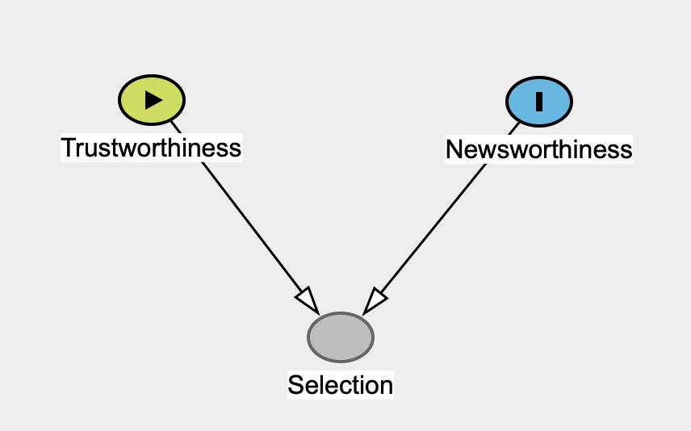

06 - What’s next?
This is just the beginning
You have learnt a great deal already!
Statistics as a tool to deal with uncertainty and variability.
Regression models (Gaussian, log-normal, Bernoulli, Poisson, negative binomial, ordinal) for a variety of outcome variables.
One predictor: numeric or categorical.
Working with posterior draws.
But there is more you need to learn to use regression models in actual research!
Many predictors: interactions
Figure 1: Regression lines illustrating an interaction between phonetic distance and lexical status.
Other types of outcome variables
Variables bounded between 0 and 1, like proportions. Use a beta regression.
Categorical variables with more than two categories (but unordered). Use a categorical (multinomial) regression.
Multiple outcome variables! Use multivariate regression models.
Can you think of more types?
Non-linear effects: smooth terms
Figure 2: Vowel duration and speech rate.
Repeated measures: multilevel/hierarchical/mixed-effects
Figure 3: Jitter plot showing RTs by lexical status for a selection of participants.
Model diagnostics
Model diagnostics help us determine cases when there is something wrong with the model or the data or both.
The posterior predictive check plot is one type of diagnostic, but there are others (like \(\hat{R}\) and Effective Sample Size in the model summary).
Prior probability distributions
We’ve been using the default priors set by brms. They are usually fine.
It might be preferable to specify custom priors.
In any case, learning the basics of prior specification is fundamental.
Frequentist vs Bayesian statistics
Modern research is dominated by the “null ritual”, a degenerate form of frequentist statistics (Gigerenzer, Krauss, and Vitouch 2004; Gigerenzer 2004, 2018). It is based on “rejecting a nil hypothesis”.
The “null ritual” is not a robust statistical approach.
Proper frequentist methods are difficult to apply in practice: they tell us \(P(d | H)\) but we want \(P(H | d)\).
Bayesian statistics is about estimating uncertainty and accounting for variability with posterior probability distributions.
Dimensionality reduction
Methods to reduce “dimensionality” of the data.
Principal Component Analysis.
Multiple Correspondence Analysis.
Clustering Methods.
Causal inference
“Correlation is not causation!”
Well… it is if you adopt a causal inference approach.
Directed Acyclic Graphs (DAGs).

Causal inference: collider bias

From McElreath (2020).
Modelling mindsets
Molnar (2022): Modeling Mindsets: The Many Cultures Of Learning From Data.
Statistical modelling, frequentism, Bayesianims, likelihoodism, causal inference, machine learning, supervised learning, unsupervised learning, reinforcement learning, deep learning.
Be a T-shaped Modeller.
- Deep knowledge of one approach, superficial knowledge of the rest.
Where can I learn all that?
Resources for learning are linked on this page: https://uoelel.github.io/analysis.html
You can watch recordings of other workshops I run here: https://uoelel.github.io/stew.html
Thank you!

Mr. Happy Face, the 2022 winner of the World’s Ugliest Dog Competition, looks towards the camera. Josh Edelson/AFP/Getty Images